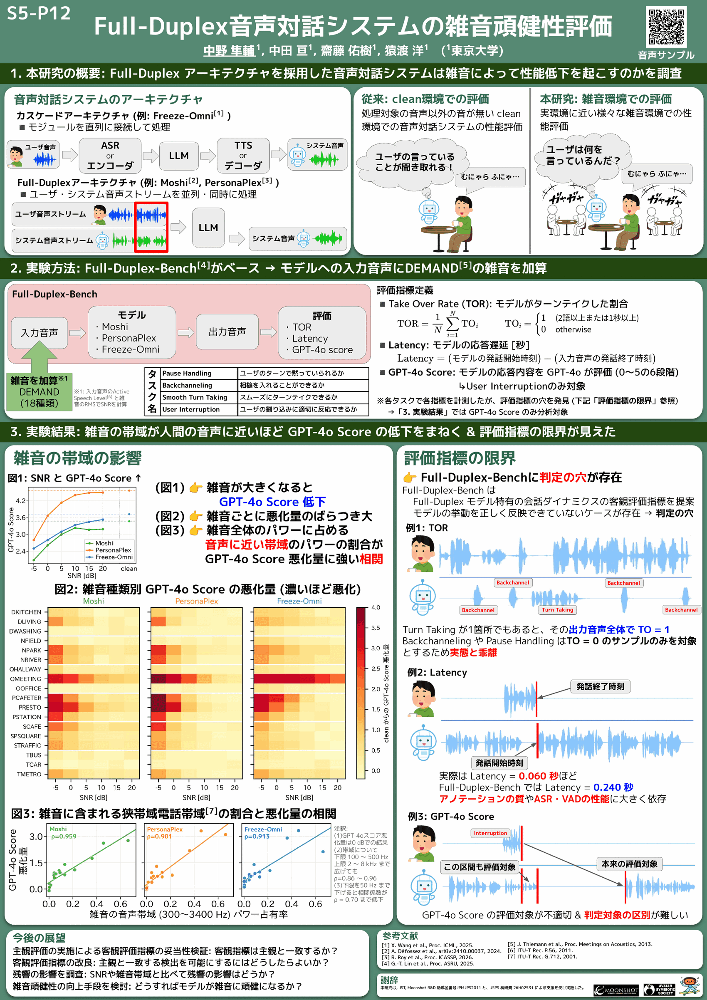
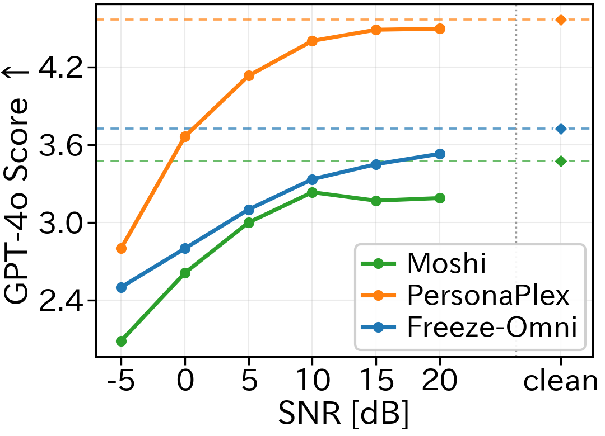
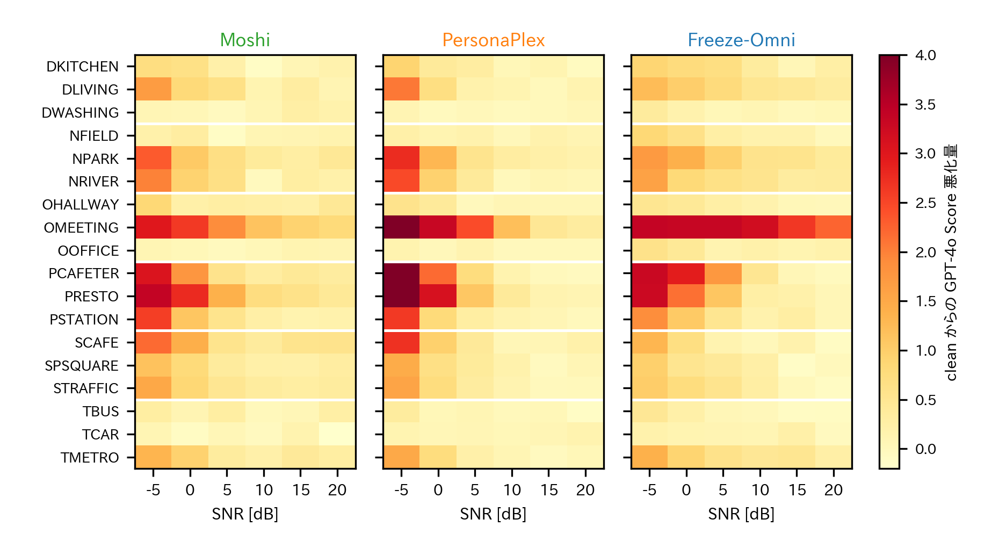
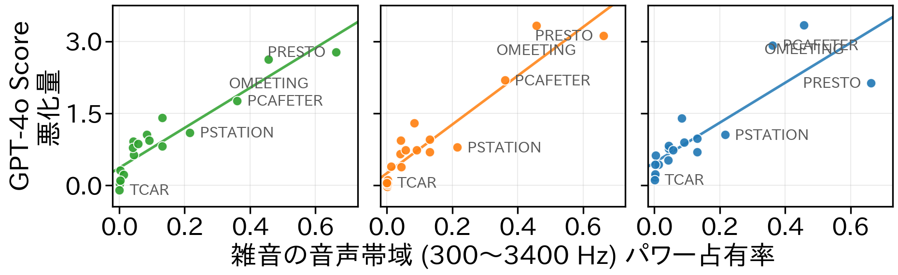

YANS 2026 ポスター発表 S5-P12
東京大学
ポスターに掲載した音声サンプルと図表を置いたページです。 Full-Duplex 音声対話システムが雑音環境でどのように応答を崩すのかを、実際の音で確認できます。

Full-Duplex-Bench[4] の User Interruption タスクの 1 例です。 ユーザが最初の話題を話している途中で別の話題に割り込むので、モデルは 割り込み後の話題に応答するのが正解になります。
Full-Duplex モデルは音声ストリームが始まった直後から発話できてしまうため、 会話が始まる前の不安定な挙動がそのまま評価に混ざってしまいます。そこで本研究では、 入力音声の先頭に 4 秒の無音を挿入し、雑音はその 4 秒にも重畳 しました。これにより
下の波形図で灰色に塗った区間がその 4 秒です。実際、モデルによってはこの区間で 勝手に喋り始めているのが見て取れます。赤い縦線は割り込み発話の区間です。
以下は同じ対話に対して、雑音の種類だけを変えた 4 条件です。雑音を加える強さ （SNR 0 dB）はすべて同じで、変えているのは雑音の種類だけです。 上から順に、雑音が人間の音声に近い帯域を持つようになります。
モデルへの入力音声（この音を聞かせました）
Moshi の応答GPT-4o 5 点
入力とモデル出力を同時に聴く（左＝入力音声／右＝モデル出力）
I actually just finished reading a book called The Power of Now by Eckhart Tolley. It's a really interesting book that talks about being in the present moment. It's quite a beautiful book. It's not really a book about running, but it's an interesting book.
PersonaPlex の応答GPT-4o 5 点
入力とモデル出力を同時に聴く（左＝入力音声／右＝モデル出力）
Are some solid picks like The Alchemist for a Feel-Good Read, The Number One Ladies Detective Agency for A More Gentle Mystery, and Maybe Educated if you want a story about perseverance. Those are all pretty engaging.
Freeze-Omni の応答GPT-4o 5 点
入力とモデル出力を同時に聴く（左＝入力音声／右＝モデル出力）
Certainly, here are a few book recommendations across different genres. 1 Fiction: The Night Circus by Erin Mordenstern. This book is a beautifully written tale of magic, love, and competition set in a mysterious circus that appears.
モデルへの入力音声（この音を聞かせました）
Moshi の応答GPT-4o 5 点
入力とモデル出力を同時に聴く（左＝入力音声／右＝モデル出力）
One of my favorites is The Four Hour Body by Tim Ferriss. It's a comprehensive guide to health and fitness, with a lot of useful insights.
PersonaPlex の応答GPT-4o 5 点
入力とモデル出力を同時に聴く（左＝入力音声／右＝モデル出力）
If you like mystery, I'd suggest the Hound of the Baskervilles. It's pretty gripping. Or for something more recent and mind-bending, try the Ninth Circus. And for something a bit off the beaten path, you could go for The Alchemist. It's quick and inspiring. Those are all good picks. Give them a try.
Freeze-Omni の応答GPT-4o 5 点
入力とモデル出力を同時に聴く（左＝入力音声／右＝モデル出力）
Certainly, here are a few book recommendations across different Zhangyuas. One Fiction, The Night Cirques by Aaron Mules Stern. This novel is a beautiful, enchanting tale of two young magicians who are drawn into asterious competition.
モデルへの入力音声（この音を聞かせました）
Moshi の応答GPT-4o 0 点
入力とモデル出力を同時に聴く（左＝入力音声／右＝モデル出力）
Yes, I can recommend some. But first, you need to know your body type. Are you more evident?
PersonaPlex の応答GPT-4o 0 点
入力とモデル出力を同時に聴く（左＝入力音声／右＝モデル出力）
Simple tricks, try to keep the room cool, limit screens an hour before, do a quick stretch, have a warm drink. Those usually help you fall asleep faster, right?
Freeze-Omni の応答GPT-4o 0 点
入力とモデル出力を同時に聴く（左＝入力音声／右＝モデル出力）
Details, project files, and any other forms of communication that show your involvement. 2. Communicate clearly, approach the person directly and calmly. Explain that you believe they are misatreating your work and provide evidence to.
モデルへの入力音声（この音を聞かせました）
Moshi の応答GPT-4o 0 点
入力とモデル出力を同時に聴く（左＝入力音声／右＝モデル出力）
I actually do. It's a beautiful park that's been around for centuries. It's got a lot of history.
PersonaPlex の応答GPT-4o 0 点
入力とモデル出力を同時に聴く（左＝入力音声／右＝モデル出力）
Try a basic pasta dish with garlic, olive oil, fresh basil, a bit of parmesan, or a classic tomato basil spaghetti. Another good option is a simple grilled chicken with lemon, rusted veggies that's tasty and easy for a first-time cook.
Freeze-Omni の応答GPT-4o 0 点
入力とモデル出力を同時に聴く（左＝入力音声／右＝モデル出力）
Depends on several factors, including the size of the database, the frequency of updates, and the specific requirements of your application. Here are some guidelines. 1. Daily mains. Running basic checks and
走行中の車内 (TCAR) の雑音では 3 モデルとも本の話題に正しく応答できていますが、 カフェテリア (PCAFETER) や会議室 (OMEETING) の雑音では、まったく無関係な話題を 話し始めてしまいます。同じ音量の雑音でも、人間の音声に近い帯域にパワーを持つ雑音ほど 対話が壊れるという図3 の主張が、そのまま聞き取れる例です。
実験に使った DEMAND[5] の 18 種類の雑音を、10 秒ずつそのまま聴けます。 図3 の横軸である音声帯域パワー占有率（雑音の全パワーに占める 300〜3400 Hz の割合） が小さい順に並べているので、下にいくほど「人の話し声に近い雑音」になります。 聴き比べやすいように RMS を揃え、モデルへの入力と同じ 24 kHz で書き出しています。
上位の TCAR や DWASHING は低域中心の定常音で、モデルの性能はほとんど落ちません。 一方、下位の PCAFETER・OMEETING・PRESTO は周囲の人の話し声が主成分で、 同じ音量でも対話が大きく壊れます。



本研究は, JST, Moonshot R&D 助成金番号 JPMJPS2011 と、 JSPS 科研費 26H02531 による支援を受け実施した。
{kind=link}
{kind=link}
{kind=link}
{kind=link}
{kind=link}